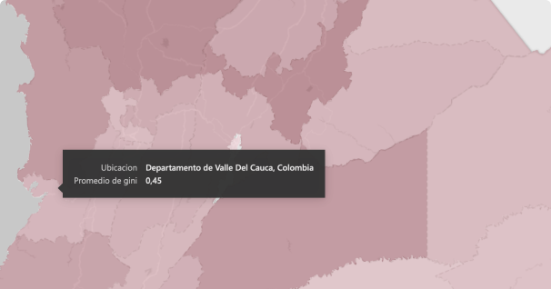
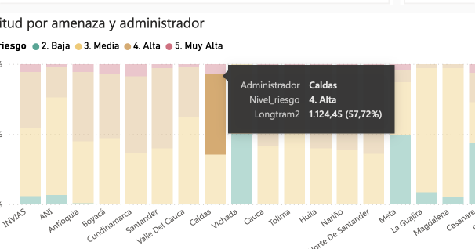
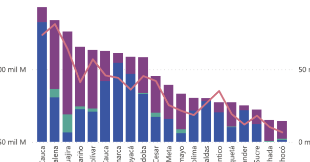
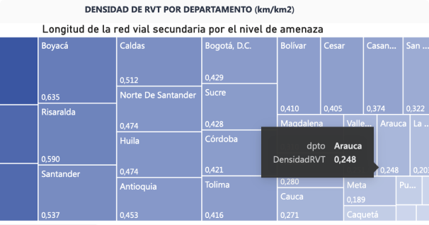

Gini movilidad
En el rango de 0 a 1, el promedio nacional del Gini movilidad es de 0.47. Menos de la mitad del país tienen una movilidad aceptable.

Amenaza movimiento en masa
De 17 mil km de vías primarias se encuentran en riesgo muy alto y alta 6.513 km, siendo un 38% del total.

Cobertura de energía
Más de 1 millón de viviendas no tienen servicio de energía.

Densidad red vial
Cundinamarca tiene 900 metros de vías terciarias por kilómetro cuadrado de territorio, pero otros departamentos solo se tienen cerca de 100 metros.